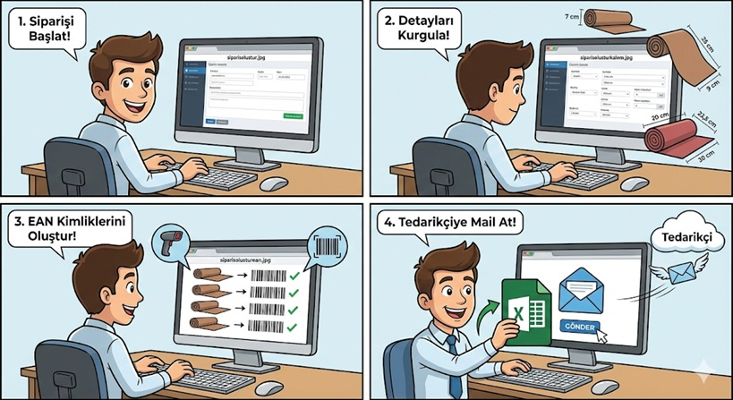
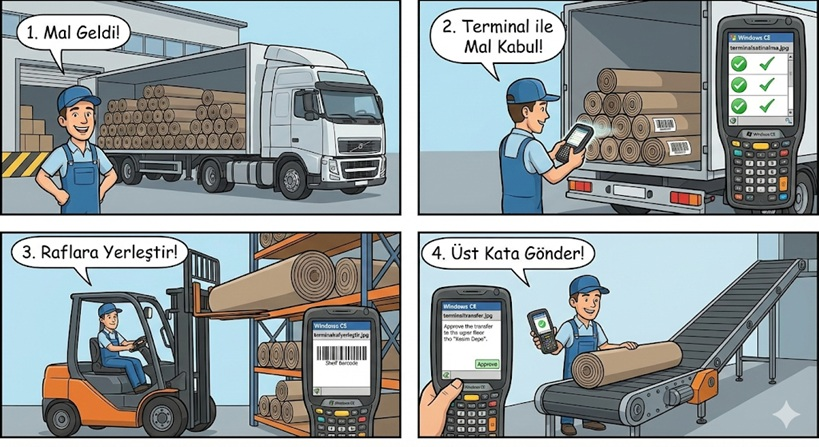
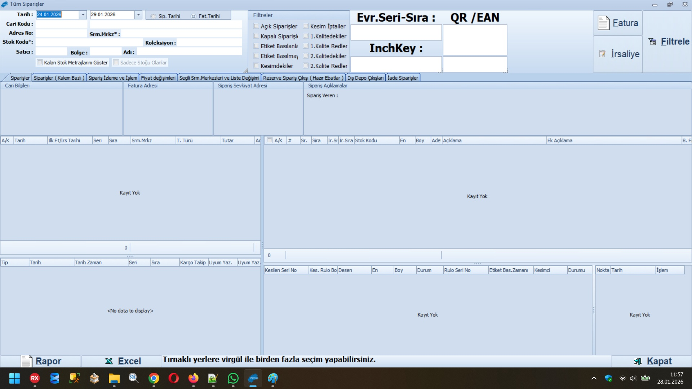
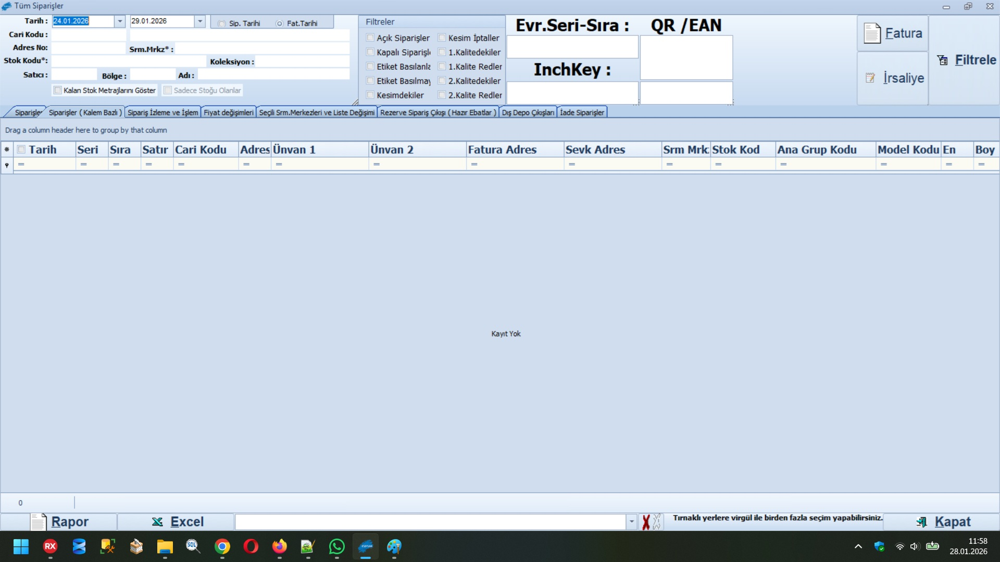
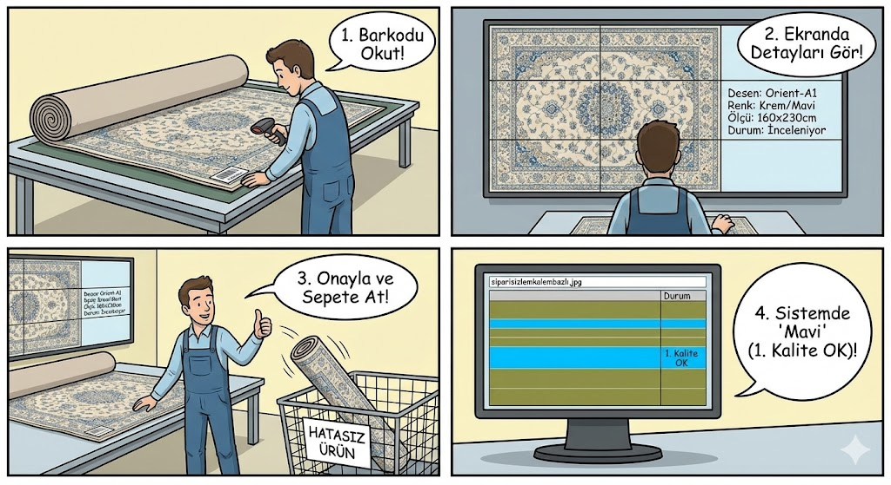
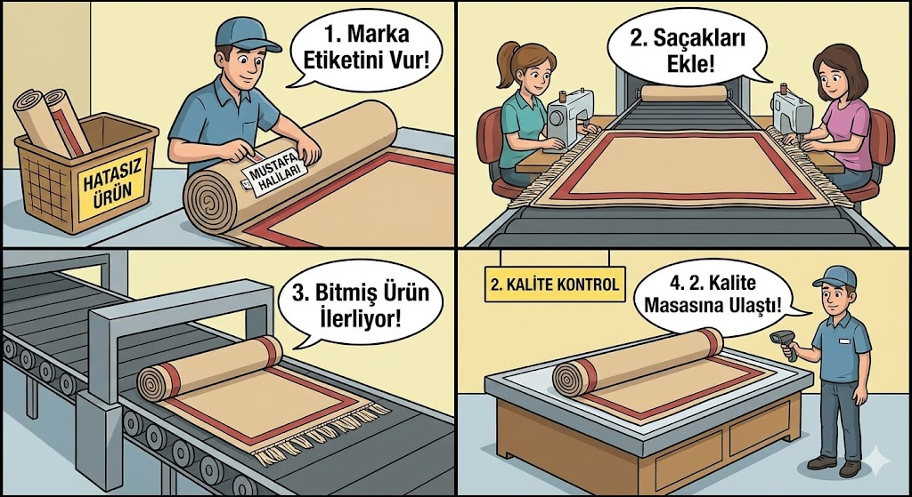
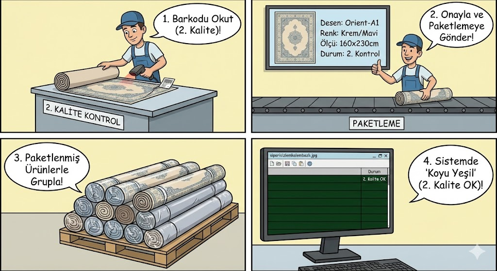

01. Stratejik Tedarik ve EAN Mimarisi
"Her şey bir planla başlar. Planlama Uzmanımız, dev top halıların siparişini Mikro üzerinden kurgularken sistem her kalem için eşsiz bir dijital kimlik üretir."
Yazılım Ekranı (Güvenli Alan)
Operasyon Hikayesi
Tedarikçiye iletilen otomatik Excel listeleri, ürünlerin henüz yoldayken sizin barkodlarınızla kimliklenmesini sağlar. Ürün kapıya ulaştığında kimlik karmaşası biter, hız başlar.
Gerçek Zamanlı Mal Kabul .02
Süreç Dinamiği
Yazılım Ekranı

"Tır depoya yanaştığı an, Windows CE terminalleri devreye girer. Okutulan her barkod Mikro'da anlık stok olur; forkliftler halıları adresli raflarına dizerken sistem yerlerini saniyeler içinde kaydeder."
03. Hibrit Sipariş ve XML Senkronizasyonu
B2B portallardan akan XML servisleri, bayilerin mobil talepleri ve WhatsApp üzerinden gelen manuel girişler... Hepsi dev bir dijital havuzda toplanır.

04. Kesim Sahası: Mustafa İş Başında
STATÜ: OLIVE (KESİMDE)"Operatörümüz Mustafa, kendi ismini seçip barkodu okuttuğu anda sistem satırı 'Zeytinyağı' (Olive) rengine çevirir. Bu, fabrikanın o anki nabzıdır; kimin hangi halıyı kestiği anlık izlenebilir."
Aşama 5: Mavi Statü
Halı serilir, barkod okutulur ve büyük ekranda resim onaylanır. Sipariş artık 'Mavi'dir; 1. Kalite OK!
Aşama 6: Konfeksiyon
Marka etiketleri vurulur, saçaklar eklenir. Halı son formuna bant üzerinde personelin maharetli ellerinde ulaşır.
Aşama 7: Koyu Yeşil
Final kontrolü yapılan halılar 'Koyu Yeşil' rengini alır. Bu renk, 'Hatasız Ürün' demektir.
Kapanış: Görünmez Kahramanlar
Akıllı Belge Motoru
"Arka planda uyumayan bir servis modülü... Tüm kalemleri tamamlanan siparişleri yakalar, faturaları otomatik döker ve kargo barkodlarını saniyeler içinde hazırlar. Statü artık 'Gri'dir."
7000+ m² Türkiye Yollarında
"Barkodları vurulan halılar Aras Kargo kamyonlarına yüklenir. Aynı gün Türkiye'nin her noktasına binlerce metrekare halı, minimum insan müdahalesi ve maksimum doğrulukla yola çıkar."